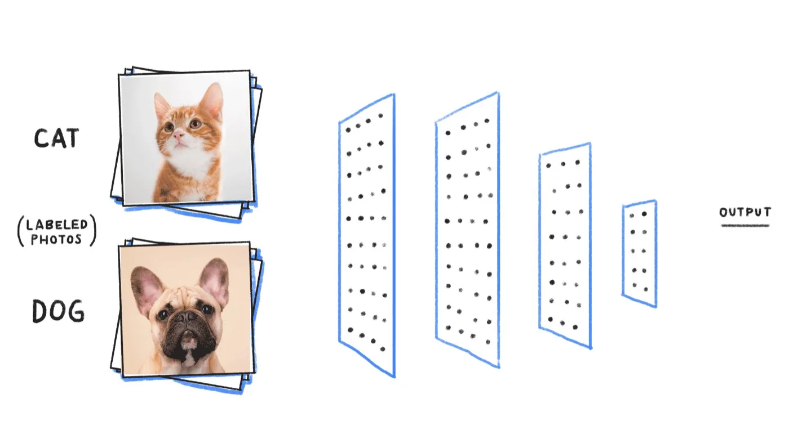
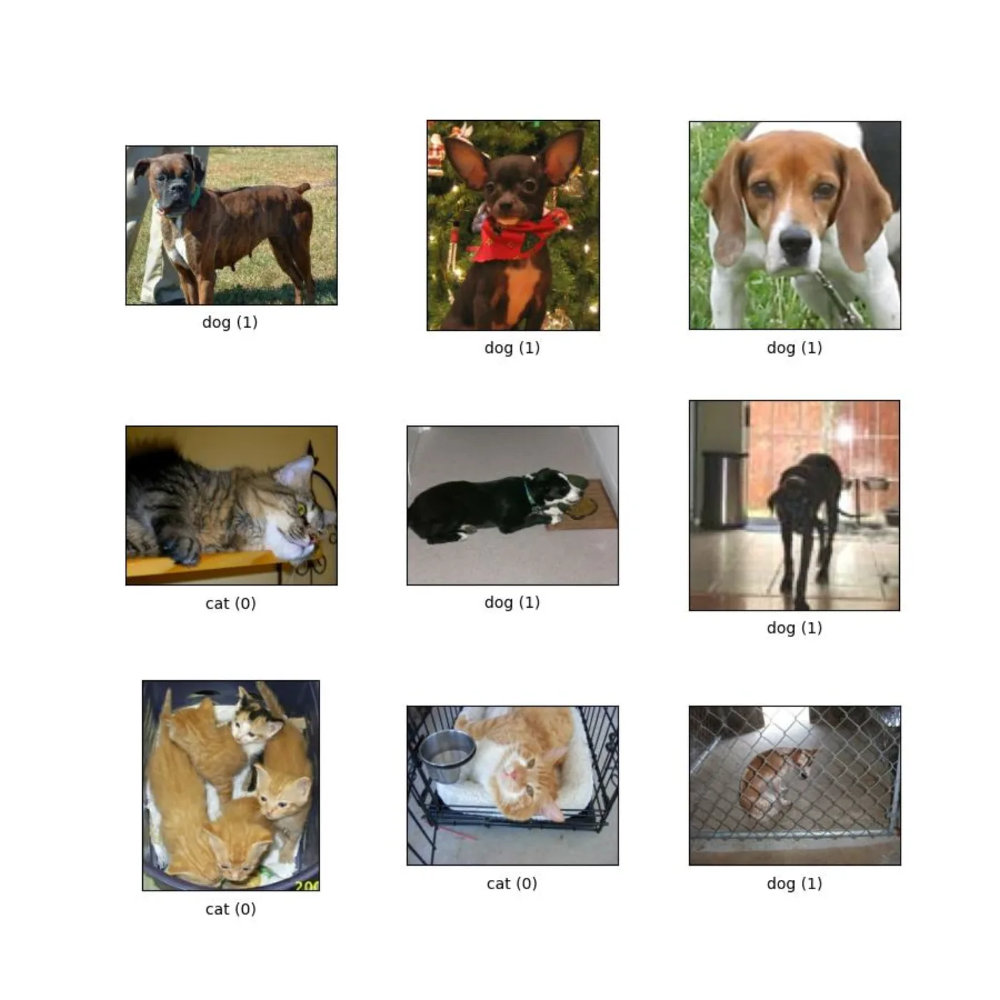
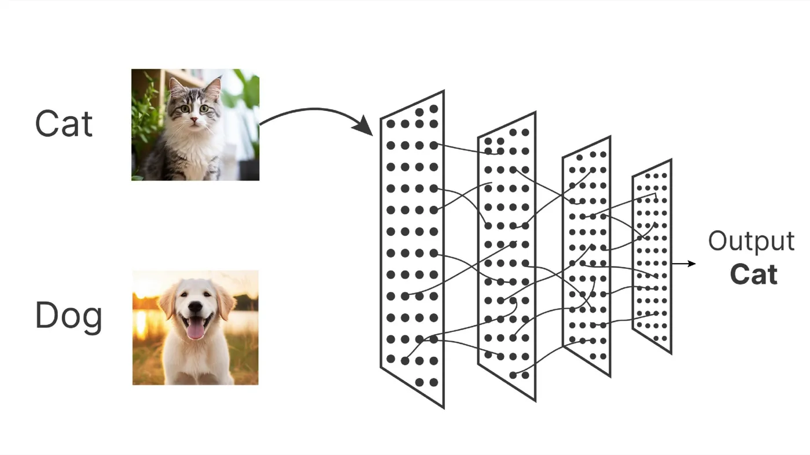
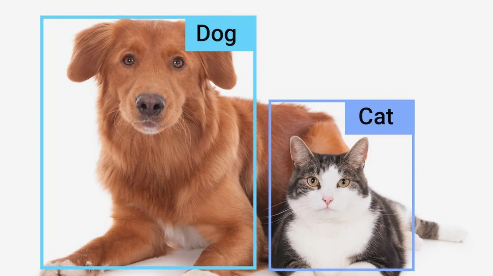
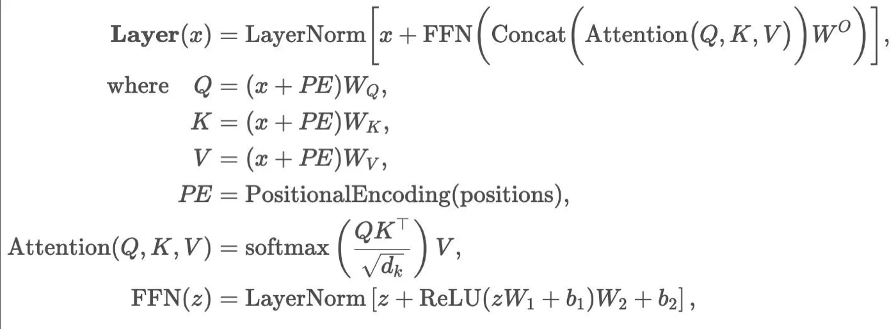

C'est quoi l'IA générative ?
Ce qu'est un modèle, comment il apprend, et ce qu'on va comparer.
C'est quoi l'IA ?
Faire faire à une machine des tâches qui demandent d'ordinaire de l'intelligence humaine.
Une création humaine : des instructions en entrée, un résultat en sortie.
Reconnaître un visage, produire du langage, anticiper la météo.
L'IA existait avant
IA

Elle trie, reconnaît, prédit. Traduction, imagerie médicale, prévision météo.
IA générative
Elle produit. Explosion depuis le lancement de ChatGPT, fin 2022.
La recette
Des données

Des textes, des images, avec ce qu'ils représentent.
+ beaucoup de calculs

La machine ajuste ses chiffres jusqu'à retomber sur les bonnes réponses.
= un modèle d'IA

Qui prédit ensuite sur des données qu'il n'a jamais vues.
Sur quoi s'entraîne un modèle ?
- Des pages web issues de collectes comme Common Crawl.
- Des corpus ensuite nettoyés, dédupliqués et filtrés.
Exemple : carte du jeu de données FineWeb, Hugging Face.
Un jeu de données type
Exemple : FineWeb.
51 To
de texte, soit 18 500 milliards de jetons.
Carte du jeu de données FineWeb, HuggingFace : le tableau de la carte totalise aujourd'hui 50 447 Go, pour 18 500 milliards de jetons.
« Apprendre », pour une machine
Un modèle, c'est un empilement de formules. Apprendre, c'est en régler les chiffres, un peu mieux à chaque exemple.
Personne ne les règle à la main : la machine se corrige elle-même, des milliards de fois.

Ce qu'on obtient au bout
Pas une base de connaissances, pas un moteur de recherche.
Un ensemble de chiffres qui servent à prédire la réponse la plus probable à la question posée.
Ces chiffres : les paramètres
compar:IA affiche leur nombre pour les modèles ouverts.
Pour les modèles propriétaires, dont les laboratoires ne publient rien, il n'affiche qu'une classe de taille.
Catalogue des modèles de compar:IA, page /models.
L'arène du duel
- Vous posez une question.
- Deux modèles anonymes répondent.
- Vous évaluez les réponses à l'aveugle.
- Les modèles sont révélés, avec le bilan de la discussion.
comparia.beta.gouv.fr